前言
前端测试包含的内容
前端测试的意义
单元测试
单元测试是什么
前端需要单元测试的部分
编写测试用例的原则
react 测试工具链的选择
测试工具库
测试框架
小结
单元测试包含的主要部分
基于 Enzyme 的 react 单元测试实际体验
功能简介
函数测试
组件测试
测试性能
小结
单元测试总结
UI 自动化测试
UI 自动化测试工具
测试载体介绍
实际载体测试
UI 自动化测试总结
总结
前端开发中的测试在前端的开发过程中一直不是必须包含的步骤。但是随着每个项目的复杂化、代码的高复用性要求、组件之间的高内聚低耦合的要求越来越高，我们需要使用一些其他手段来保证代码质量并且缩短回馈周期，而进行整体测试就是其中一种手段，也就是本文要探讨的范畴。
是指对项目中的最小可测试单元进行检查和验证。
对于前端来说，比如某一个函数的功能是否正常、组件的表现是否正常，简单来说就是对人为规定的最小可测试模块进行工程化测试。软件的独立单元将在与程序的其他部分相隔离互不影响的情况下进行测试。
对于前端来说可分拆的最小部分为函数，最小可视化内容为组件，所以前端的测试内容可以分为函数、组件
对于 react 而言，函数一般在整体项目里的覆盖率并不高在 10%左右。
对于 react 而言，组件在整体项目里占比非常高，可以达到 80-90%。
react 本身只能用这套工具库测试，但是由于它太不方便了，并且上手难度也相对较高，于是 Airbnb 公司开发另外一套测试工具库来替代它。换言之这套测试工具库的在当前并不是特别适合开展探讨，所以就不对它展开探讨。
Enzyme 是由 Airbnb 开源的一个 React 的 JavaScript 测试工具，它具有如下特点
当前市面上的测试框架各有各的优势和缺点，不分伯仲，本次测试框架的探讨并不是最主要的部分，所以选用一个配置最为简单，最为灵活的测试框架-Mocha
选用更为简单易用的Enzyme 作为测试工具库，选用简单灵活的Mocha作为测试框架，进行以下的单元测试。
当断言失败时则表示测试不通过
true则通过为某个特殊目标而编制的一组测试输入、执行条件以及预期结果，以便测试某个功能是否达到预期，多表现为一个函数。
这里挑选两个函数进行测试，一个简单一个稍微复杂些
describe('加法函数测试', () => { it('1+1应该等于2', () => { expect(add(1, 1)).to.be.equal(2) })})可以看到结果为测试通过
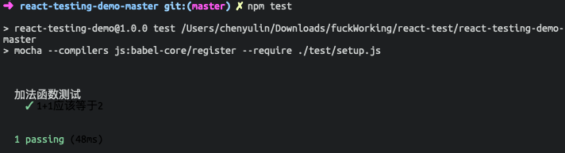
xxxxxxxxxxdescribe('冒泡排序测试', () => { it('[1,5,6,8,9,0,-1]应该排序为[-1,0,1,5,6,8,9]', () => { let sortValue = sort([1, 5, 6, 8, 9, 0, -1]).join('') let expectValue = [-1, 0, 1, 5, 6, 8, 9].join('') expect(sortValue).to.be.equal(expectValue) })})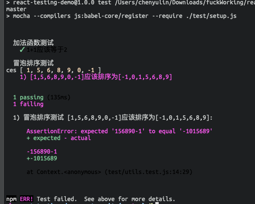
显然断言失败了，提示我们输出的值跟期望值不一致，通过修改 bug 再次运行测试
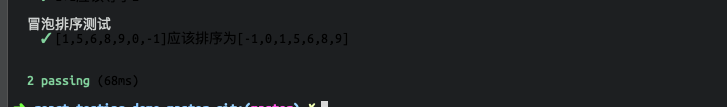
这次断言成功了
前面 1.5.2.1 采取一个一个函数进行测试，现在进行多个函数并行测试
场景为：定义一个 Store 类，具有 loading 和 tableData 两个变量，向外暴露 4 个函数，代码如下。
ximport { sort } from './math' // 冒泡排序函数class Store { constructor() { this.loading = true this.tableData = [1, 2, 3, 4, 0, 11, 43, 24, 67, 7] }}const store = new Store()export const getLoading = function() { return store.loading}export const getData = function() { return store.tableData}export const close = function() { store.loading = false}export const sortTableData = function() { store.tableData = sort(store.tableData)}将对 4 个暴露出来的函数进行测试，其中getLoading、getData具有返回值。
而close、sortTableData不具有返回值，显然要判断这两个函数是否正确，就必须在测试代码调用getLoading或者getData用以观察close、sortTableData是否正确执行，所以要先对getLoading、getData进行测试。核心测试代码如下：
xxxxxxxxxxdescribe('有返回-获得store loading状态', () => { it('应该返回ture', () => { let value = getLoading() expect(value).to.be.equal(true) })})describe('有返回-获得store tableData值', () => { it('应该返回 1234114324677', () => { let value = getData().join('') let expectValue = [1, 2, 3, 4, 0, 11, 43, 24, 67, 7].join('') expect(value).to.be.equal(expectValue) })})describe('无返回-修改loading值状态', () => { it('应该成功修改store的loading状态为false', () => { close() let expectValue = false expect(getLoading()).to.be.equal(expectValue) })})describe('无返回-修改tableData排序', () => { it('应该成功修改tableData为[0, 1, 2, 3, 4, 7, 11, 24, 43,67]', () => { sortTableData() let value = getData().join('') let expectValue = [0, 1, 2, 3, 4, 7, 11, 24, 43, 67] expect(value).to.be.equal(expectValue.join('')) })})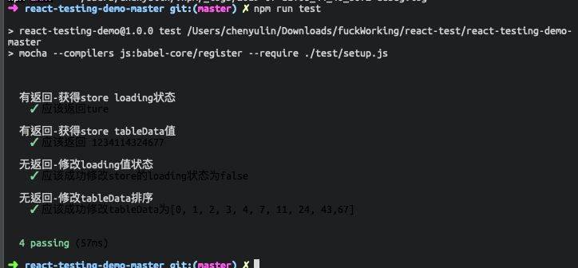
从结果看出，并行测试具有顺序的概念，确保了前两个函数的正确性，后两个函数才可以正确测试，并且测试的速度是非常快的，并不会收到多个测试用例的影响而导致不可接受的变慢。
无论是具有返回值还是没有返回值的函数进行测试都相对简单，测试代码的编写也并不复杂，但是却可以带来一劳永逸的效果，每次运行都可以对所有的函数进行测试。而在没有进行单元测试，就得对每一个函数单独手动测试，可能耗费大量时间，所以单论函数测试来说，进行单元测试是有极大的好处的。
一个简单的 todo-list 组件，标题为todo-list具有以下功能
整体如图所示 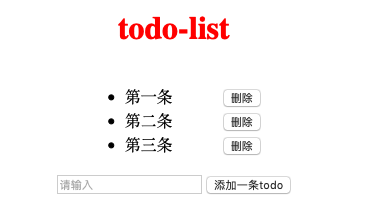
将为此组件编写以下几个测试点
浅层渲染由于不与 dom 交互，并且不涉及到子组件，所以 1、2、3、4 测试点适合使用浅层渲染来测试
xxxxxxxxxx<div style={{ display: 'flex', flexDirection: 'column', alignItems: 'center', justifyContent: 'center' }}> <h1>todo-list</h1> <TodoList /> <AddTodo /></div>AddTodo.jsx 核心代码如下
xxxxxxxxxx<div className="add-todo"> <input className="add-input" type="text" placeholder="请输入" ref="todoTitle" /> <button className="add-button" onClick={this.addTodo.bind(this)}> 添加一条todo </button></div>TodoItem.jsx 核心代码如下
xxxxxxxxxx<li> <span className={`todo-text ${todoDone}`} onClick={this.toggleDone.bind(this)} > {todo.name} </span> <button className="delete" onClick={this.deleteTodo.bind(this)}> {' '} 删除{' '} </button></li>于是根据以上组件的编写形式，测试用例代码如下
xxxxxxxxxxdescribe('判断标题是否正确', () => { it('标题应该为 todo-list', () => { let app = shallow(<App />) expect(app.find('h1').text()).to.equal('todo-list') })})describe('添加todo按钮文本是否为 添加一条todo', () => { it('按钮文本应该为 添加一条todo', () => { let addTodo = shallow(<AddTodo />) expect(addTodo.find('.add-button').text()).to.equal('添加一条todo') })})describe('判断输入框的提示是否为 请输入', () => { it('提示文本应该为 请输入', () => { let addTodo = shallow(<AddTodo />) let input = addTodo.find('input') let placeholder = input.node.props.placeholder expect(placeholder).to.equal('请输入') })})describe('删除todo按钮文本是否为 删除', () => { it('按钮文本应该为 删除', () => { let todoItem = shallow(<TodoItem todo="测试" done={false} />) expect( todoItem .find('.delete') .text() .trim() ).to.equal('删除') })})测试结果如下
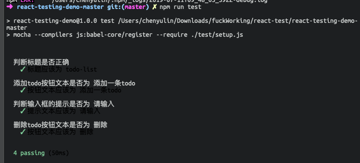
此方法会把组件渲染成一个 HTML 字符串，跟浅渲染很像，不同的是内部使用的是Cheerio 库，接下来将使用这个方法进行测试点 5，核心测试代码如下：
xxxxxxxxxxdescribe('初始化数据为-"第一条"、"第二条"、"第三条"', function() { it('应该没有一条数据的状态是完成的', function() { let app = render(<App />) expect(app.find('.todo-done').length).to.equal(0) }) it('应该有3条数据，并且分别为“第一条”，“第二条”，“第三条”', function() { let value = ['第一条', '第二条', '第三条'].join('') let app = render(<App />) let todoItems = app.find('.todo-item .todo-text') let expectValue = todoItems.length === 3 && value === todoItems.text() expect(expectValue).to.equal(true) })})测试结果如图
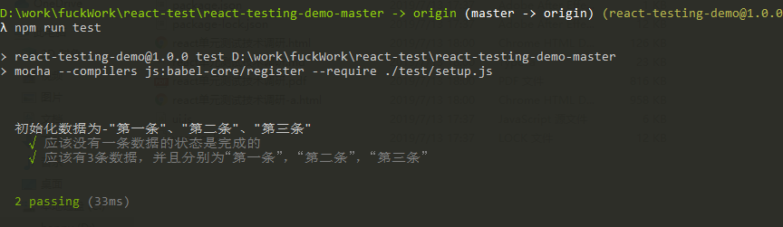
对于按钮点击这类需要触发的测试，靠浅渲染和静态渲染（render）是无法进行测试，需要用到mount渲染才能进行测试，所以测试点 6、7、8 适合使用深度渲染来测，核心测试代码如下：
xxxxxxxxxxdescribe('测试添加功能是否正确', () => { it('添加-todo-list的数组应该增加一个', () => { let app = mount(<App />) let todoLength = app.find('li').length let addInput = app.find('.add-input').get(0) addInput.value = '测试' app.find('.add-button').simulate('click') expect(app.find('li').length).to.equal(todoLength + 1) }) it('添加一条数据的内容应该等于输入框输入的内容', () => { let app = mount(<App />) let value = '增加一条todo' let input = app.find('.add-input').get(0) input.value = value app.find('.add-button').simulate('click') // 模拟点击 let todos = app.find('.todo-text') let lastItem = todos.last() expect(lastItem.text()).to.equal(value) })})describe('测试删除按能是否正确', () => { it('删除-todo-list的数组应该变少一个', () => { let app = mount(<App />) let todoLength = app.find('li').length app .find('button.delete') .at(0) .simulate('click') expect(app.find('li').length).to.equal(todoLength - 1) })})测试结果如下：
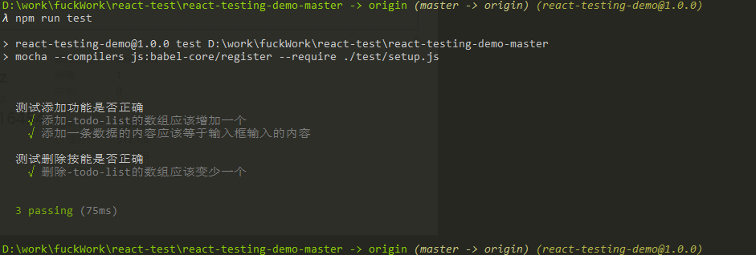
根据上面的实际体验，由于框架和工具库提供的丰富 api 以致我们编写测试代码可以非常简单地实现需求，其代码量和复杂度也并不高。
当存在 1 个测试用例时，耗时为
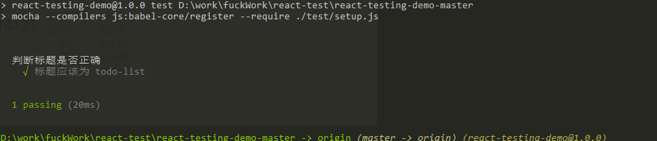
当存在 4 个测试用例时，耗时为
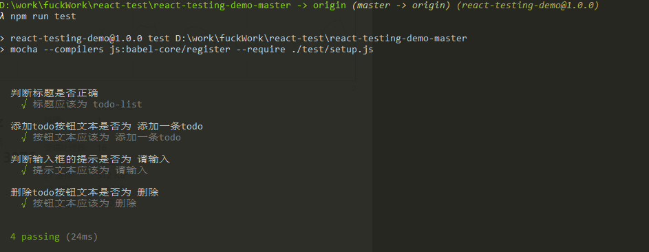
把上面所实现的测试用例全部执行，耗时为
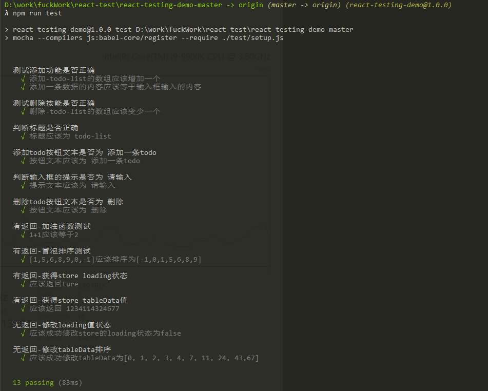
可以看出，测试用例的个数对测试速度的影响是不明显的，这里的时间变长主要是因为mount渲染的方式会导致 dom 加载，当撤去mount渲染的测试之后，耗时仅在45ms
根据以上测试和实际编写测试代码，可以得出两点
综合以上两点，单元测试均是给项目提供了一道很好的屏障，保障代码可靠性、健壮性、低耦合性，对整体的项目是利大于弊的。
UI 自动化测试的思路大致是将页面运行在无界浏览器（虚拟浏览器/无头浏览器），通过常规的 dom 操作模拟真实行为，生成当前场景的截图并且输出，然后进行人工校验。
各个语言都有自己的虚拟浏览器实现，比较适合前端开发人员使用的就是puppeteer+node这套开发工具链来实现。
项目原型是一个商城的 H5 端，层级关系如下
登录页
首页
商品列表页
商品详情页
确认订单页
订单列表页
由于篇幅问题，以下展示部分代码，代码描述的是测试登录流程测试
xxxxxxxxxxasync clickLogin ({ className, imgName }) { const page = this.page await page.reload() let classList = [ '.user .am-input-control input', '.pwd .am-input-control input', ] for (let cls of classList) { if (cls.includes(className) || className == null) { await page.focus(cls) await page.keyboard.type('yun-xi') } } await page.click('.login-btn') await UiTest.screenImg(page, imgName, 'login')}async describeLogin () { let classList = [ { className: 'user', imgName: '不输入密码' }, { className: 'pwd', imgName: '不输入用户名' }, { className: '', imgName: '输入用户名和密码' }, ] for (let cls of classList) { await this.clickLogin(cls) }}其他的流程也是类似实现方案。
测试完成后会生成一系列图片，根据流程不同存在不同文件夹，如图所示
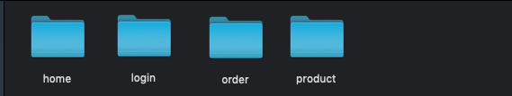
每个文件夹中包含其流程测试点的图片展示
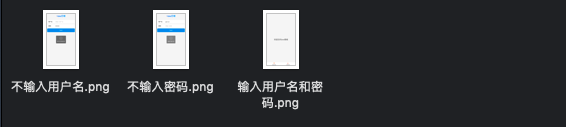
具体的效果如图，截取登录流程-当用户不输入密码的情况下页面的反应
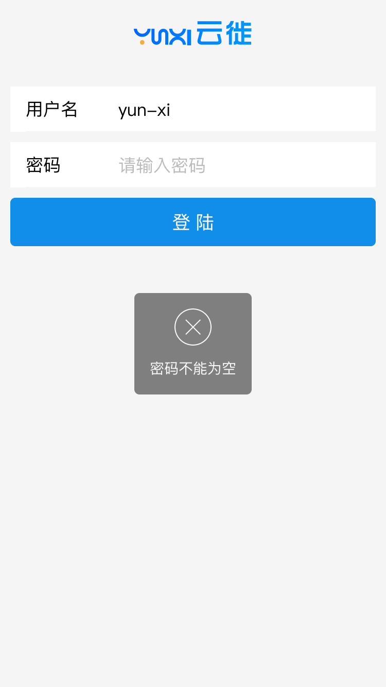
根据以上实际测试和编写测试代码，可以得出 UI 自动化测试是利大于弊的，进行 UI 自动测试的时候实际上是对整体流程的深入理解，减少大部分的简单错误，同时也加快 UI 与开发之间的反馈时间（缩短了大量的人为操作页面时间）。
根据以上所有实际使用与编写，单元测试在复杂项目下可以酌情减少组件测试的覆盖率，在复杂度低的项目里，进行 100%覆盖编写是极其有利的。UI 自动化测试在复杂度较低的项目下进行 100%覆盖是可以极大提高交稿质量和开发效率的，在项目复杂度比较高的情况下，可以挑选重要的页面进行测试。总而言之，根据测试结果本文认为进行单元测试和 UI 自动化测试都是利大于弊的。